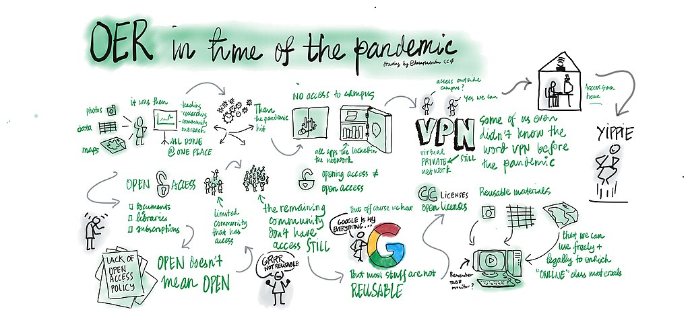

OERs for Accessible, Sustainable Education
Today we'll be looking at :OERs; what they are, how they work, and what they can do for you.
What we will cover:
- Why do we need to think more about open resources, especially in a time of pandemics?
- Understanding the resources and licenses they exist under;
- Sources for finding OER material;
- How to properly use said material.
What problems exist for OERs to solve?
- Textbook cost is a problem arising from the natural monopoly that textbooks create. Libraries can only help so much.
- Reading overload has always been a problem, but is exacerbated by the shortened duration required for three sessions per year. It also becomes more severe the more readings there are.
- YouTube being censored is of course an issue when we start to move into teaching at a global level.
Understanding OERs and Open Licensing
- Reusable — It must be free to be used in many contexts
- Retainable – It must be free to be archived privately or publicly
- Revisable – It must be freely modifiable for your own purposes
- Remixable – It must lack restrictions on using it in combination with other material
- Redistributable – It must be freely sharable and spreadable.
Hard fact: Much 'OER' material online does not meet these standards. This means "OER" is not an effective guarantee that the above can be done. To understand what you can and can't do, you must look at the licenses.
While there are plenty of licenses out there the most widely used and easiest to understand are the suite of :Creative Commons licenses. These licenses allow the creator of the work to retain copyright, but to license it seamlessly with anyone who wishes to use it while placing some conditions upon doing so. There are four such conditions, and each license may have up to three of them.
Creative Commons Logo; used in adherence with the Creative Commons Trademark Policy
- Attribution – Shortened to 'BY'. Requires the licensor to properly attribute the licensed work. All CC licenses have this property.
- Share-alike – Shortened to 'SA'. Requires the licensor to, if they create a derivative work using the licensed material, release the derivative work under an equivalent license. An OER could use this license.
- Non-commercial – Shortened to NC. Forbids the use of the work for commercial purposes. It is often considered OK for OERs. (A typical university environment is widely regarded as non-commercial.)
- No-Derivatives – Shortened to ND. Forbids the creation of derivative works. This can't be used for an OER.
Licenses can be mixed together; so you can have a CC BY-SA-NC license.
So what does this mean for you?
This is why those questions are so important.
- Are you teaching a regular university course for students under traditional conditions, within the Canvas environment? If this is the case, then you may be able to rely on exceptions for teaching and learning in the :Copyright Act.
- Are you teaching a course where you expect students to make publicly facing works? If so, then you need to be thinking about making sure you’re using resources that you can legally redistribute. (Any CC license.)
- Do you wish to use material from overseas that needs to be adapted to a local context? Then again, you need to be clear about whether the license you’re using permits that revision. (Any non ND CC license.)
- Are you using this material for a course that could be considered commercialised or for profit? (And yes, that definition is hazy, but we’d likely consider short courses, for instance, to count.) In this case, you can’t use any NC license.
- Do you have the ability and willingness to share your remix of a source? Note that the new OA policy does encourage "the publishing of Open Education content via discipline websites or repositories" but this does not mean you could always do so. (If you create a resource using, say, a chapter of a book under teaching exceptions in the copyright act, you can't then share that material in a new context!) If not, then share-alike is out.
So why bother?
There are great reasons to use this material.
- First, it gains you access to amazing resources and ways of teaching you might not have had otherwise. There’s some incredible videos and interactive tools out there to be had and used.
- Second, the benefit of freely available resources is that they are free to you and your students. There's an old aphorism that we're saying; "free like free speech, not like free beer" but we shouldn't underestimate the actual financial cost that goes into being a student. If you can use an open textbook, please consider doing so. It's a resource you know every one of your students can have access to.
Live Demo Time!
Solve these problems!
- Textbook cost is a problem arising from the natural monopoly that textbooks create. Libraries can only help so much.
- Reading overload has always been a problem, but is exacerbated by the shortened duration required for three sessions per year. It also becomes more severe the more readings there are.
- YouTube being censored is of course an issue when we start to move into teaching at a global level.
This website is © UTS 2022, created by Sean Riley, and is available under a CC-BY 4.0 International License. Excepted to this are the opening and closing slide images, which are also © UTS 2022 but are not released under any Creative Commons license. UTS retains all rights associated with these images